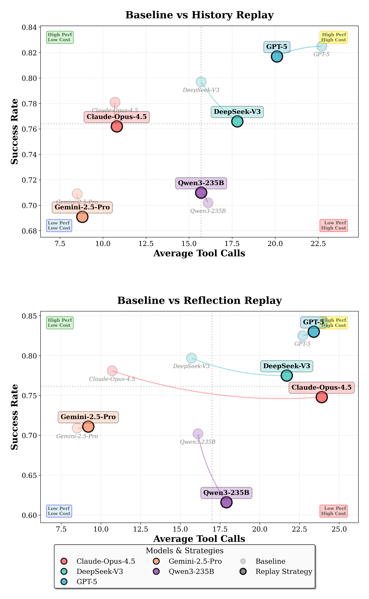

The World Won't Stay Still:
Programmable Evolution for Agent Benchmarks
* Amazon † UC Berkeley
Overview

TL;DR
- [Fill] One-line problem statement.
- [Fill] One-line method summary.
- [Fill] One-line key result / takeaway.
Abstract
LLM-powered agents solve user requests by interacting with environments, querying data, and invoking tools in multi-turn workflows. However, most existing benchmarks evaluate agents in static environments with fixed schemas and toolsets, which misses a key real-world challenge: environments evolve over time.
We introduce ProEvolve, a graph-based framework for programmable environment evolution. ProEvolve models data, tools, and schemas as a typed relational graph, where capability updates (adding, removing, or modifying tools and fields) are represented as coherent graph transformations. Based on this representation, the framework can both generate evolving environments automatically and instantiate task sandboxes via subgraph programming. We validate ProEvolve by evolving a single seed environment into 200 environments and 3,000 task sandboxes, then benchmarking representative agents to study robustness under dynamic change.
Core idea:Key Results
Efficiency and Robustness Trends
Preliminary experiments show clear model gaps and adaptation challenges under sequential environment evolution. Memory replay can help in some conditions, while reflection replay can also degrade robustness depending on the model and evolution type.

Citation
If you use this benchmark framework, please cite the project page and paper once the arXiv identifier is available.